A Product, User Experience, & Branding Redesign for Visualiz
Company Overivew
Visualiz is a company that changes how users and businesses interact together through augmented
reality.
My Role
I was a Web Dev / UX Researcher intern at Visualiz responsible for designing the full product
from scratch.
Timeline
Jun to Aug 2019: UI/UX, IA, Protoyping, Branding, Graphic Design, Product Design
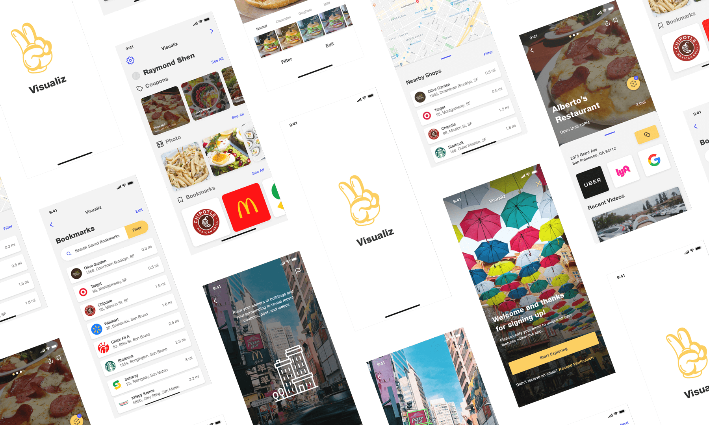
The Objective
A full redesign of the companies brand & product.
As a design intern for Visualiz the goal of this project was to help improve their initial product
design, interface, and branding before their launch date. I was assigned to redesign their user
experience, interface, and brand identity to increase user engagement and delightful user
experiences.
Research
Learning the business goals, competitors, & problems.
Competitive analysis
When I onboarded the team as their first designer, I began the redesign process by researching
potential competitive companies of similar products, platforms, and services. I also gather further
information from the CEOs about any known competitors to quickly assess and define what the
strengths, weaknesses, opportunities, and threats are for Visualiz.
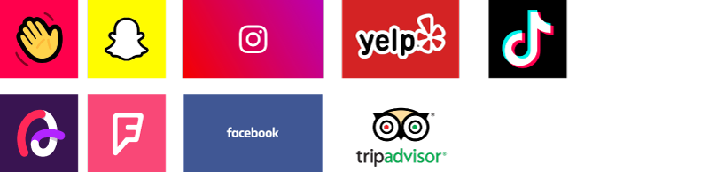
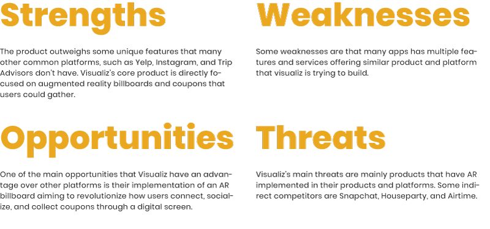
User Feedback
Gathering user feedback was extremely scarce, limited, and insufficient. The position was remote
work, so gathering data required my own personal time to conduct simple user testing over the course
of a week to gain insights on users' thoughts, challenges, and feedback.
two-month contract limited the amount of user data that I could conduct
“ I’m not sure where I can sign up or log in with Facebook for this app. I’m also wondering what the
purpose of this app is? ”
Lack of social and physical presence
The company didn't have branding to form consistency and unity across its assets, which misled many
users in questioning whether the product legitimacy should be trusted. It also lacked an identity to
represent and differentiate itself from other app platforms that serve similar services within its
market place.
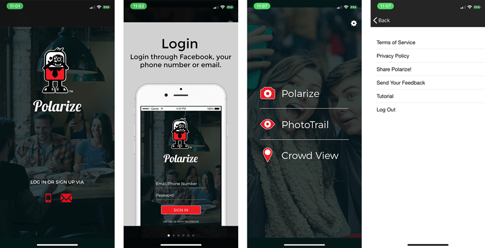
Poor visual design elements
Poor usability and navigability were eminent to provoke user frustration due to improper use of
visual design elements. To name a few major problems that consisted of:
the hierarchy which is noticeable in different scaling of sizes can be noisy and
confusing
to users
lack of contrast where important buttons, information, and primary actions aren’t
prominent
or hard to find
Lack of pattern and rhythm, causing the eye to bounce back and forth between screen
transitions
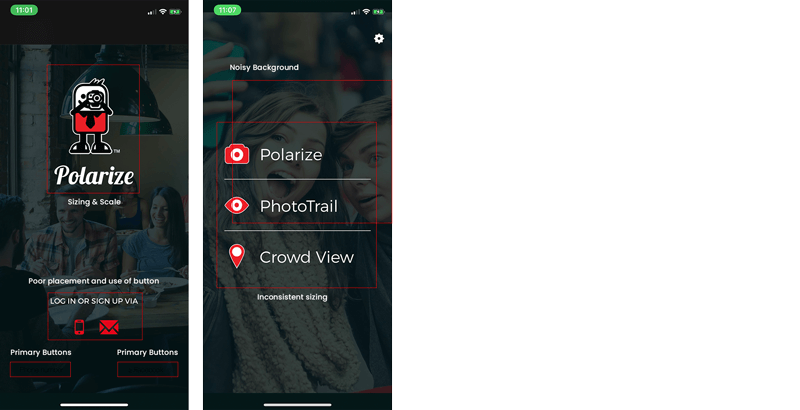
The Strategy
Understanding users to redesign Visualiz’s product & branding.
User stories
The user stories were developed by the companies CEO and COO directly provided to me as the basis to
efficiently boost the redesign and development progress before the launch date. The company provided
me with three use cases & user stories to help me build up a better understanding of my users who,
what, and why needs of the product when approaching the redesign.
User stories were provided directly by CEO to increase the speed of production
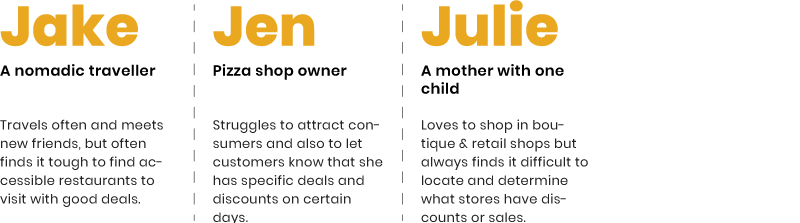
User Flow
I mapped out the initially designed user flow to help identify and define problems, pain-points, and
improvements that could be magnified or removed to increase users’ goal achievement. With the user
flow mapped out, I changed, restructured, and removed any unnecessary step and process throughout
the product to improve the product’s user experiences. Through the process, I proposed several
redesign changes that consisted of: A. Reducing steps that weren’t necessarily needed or caused a
roadblock for users during the onboarding process and B. simplifying the navigation to ease
usability and accessibility problems.
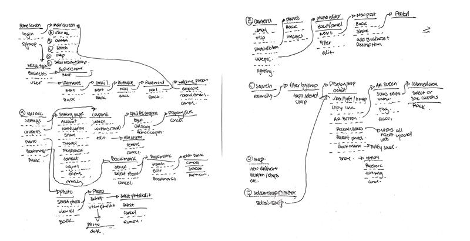
1 out of 3 user flow iterations
Researching users and defining targeted user audiences
Assessing who my user audiences are has helped me understand who I’m designing for, their beliefs,
behaviors, and familiarities so that I can better align and approach redesigning the product to
capture the defined user audiences.
User Behaviors
With a defined targeted user audience, I conducted further research on user behaviors to understand
their daily habits and what platform of products influences their life. Data was collected based on
user surveys that I’ve created, which were utilized to inform design decisions during the redesign
and branding process for Visualiz.
User data were collected upon 10 participants based on our user-targeted audience.
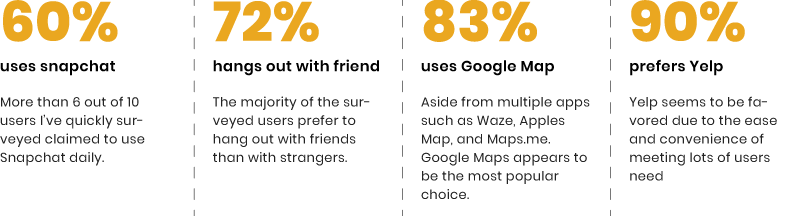
Discover
Conducted brainstorming sessions, user testing, & proposing new features to improve the product user
experience.
Brainstorm & Sketch
Brainstorming took place in multiple sessions during meetings with the CEO to discuss my findings
and new proposed solutions, features, problems, user challenges, and changes that were necessary to
improve the product user experience. Quick wireframe sketches and notes were made to quickly provide
a visual aspect of what changes could help improve the user flow and user experience.
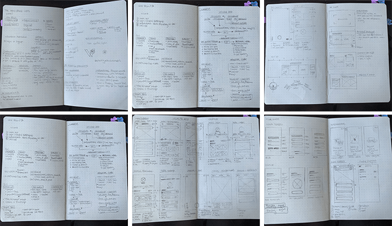
Sitemap
Sitemap was created to help visually display the navigational structure of the products hierarchy.
It also helped the CEOs understand how my proposed new design changes and user flow would impact its
user experiences and behaviors from the initially designed product user flow.
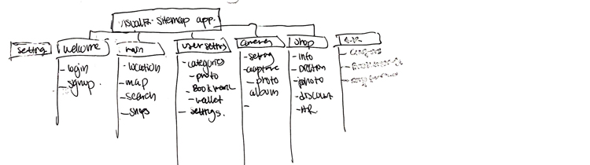
Wireframing
After the first approvals of my proposed design changes, I developed wireframes to conduct quick
user testing sessions to better understand what improvements were positively impacting users and
obstacles that users faced during the navigation process of their assigned user tasks. Further
iterations were made from the proposed design changes according to user feedback, with a majority of
users not understanding how to navigate between specific pages assigned to them.
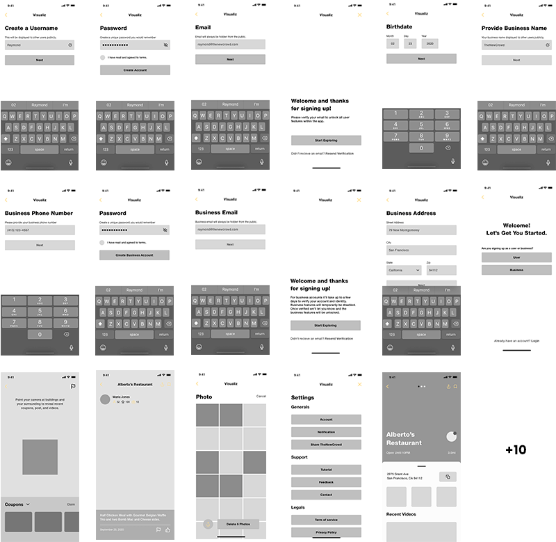
A total of 27 wireframe screens were used to conduct user testing
Prototype
A high fidelity version of the previous low fidelity wireframe was improved and iterated based on
several rounds of rapid user testing. With the high fidelity wireframe, I once more reported the new
iteration design changes to the CEO within a few weeks before launch date to visually see,
experience, and provide further feedback on what changes and improvements were necessary. From
there, I conducted another round of user testing with a clickable prototype made through Invision.
The goal was to determine whether further changes, iterations, and feedback made from the previous
sessions had improved or worsened the overall user experience and the task at hand.
User testing results & insights
Results varied when I finish the deliverable design mockups due to the constrained and limited
amount of time I had to conduct a sufficient amount of user testing. During the research process, I
did learn that many of the placements, features, and implementation we thought would be helpful
during the brainstorming session had slightly hindered and sometimes negatively impacted the user's
ability to reach their tasked goals. On the other hand, I also notice the positive impact in user
engagement due to a slight change in the user flow by reducing any redundant pages and steps users
needed to take to reach their tasked goal at hand.
The solution
Unifying the product design interface, branding, and assets for a cohesive & delightful user
experience.
Developing a brand to create a cohesive and delightful user experience
I helped the company develop its branding color and identity to differentiate itself within the
marketplace of similar platforms, products, and services. The brand development was based on
initial research and findings of who our user target audiences were. From there, I worked with
them on creating a mood board to brainstorm on different themes, vibe, and concepts that the
company sees fit with their product. The formed branding will enable future production to have a
consistent, unified, and cohesive product that is understandable and differentiable among users.
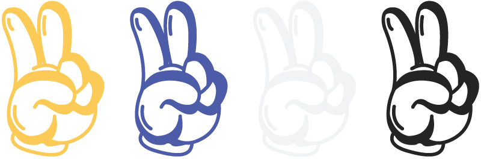
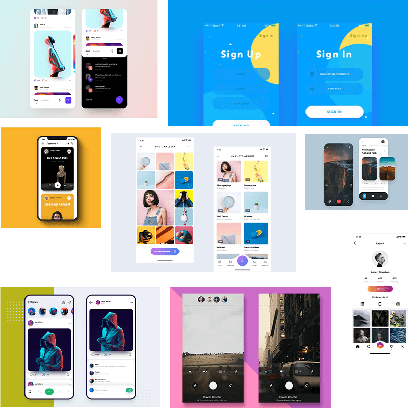
Redesigning the product interfaces
Incorporating proper contrast, hierarchy, typography, and design elements have helped improve
its user experience, scannability, findability, and usability. With the redesign, I also
included the finalized design branding elements to form a cohesive and unified experience that
doesn't confuse users when navigating through different screens.
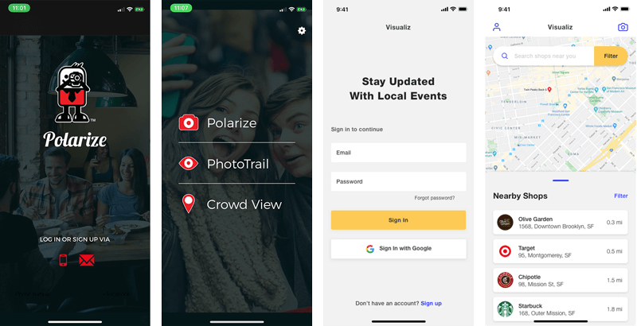
Left side old design. Right side new design.
Incorporating features
I had suggested multiple new features where users can customize, edit, and personalize their
profiles to enhance the product's user experience. Empowering users with a certain amount of
customization and personal branding helps increase positive user experiences. Personal
customization is essential for the app because it allows users psychologically to feel that
their part of the product as a creator as opposed to a mere user.
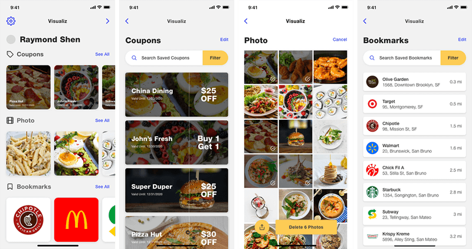
Improving usability
To improve usability, I removed multiple redundant screens from the initial product design to
ease the user flow from the need of going through multiple screens and steps to conduct a simple
search for local shops, businesses, and restaurants happening locally near them. I also
incorporated features such as wallet, bookmarks, and photos to easily allow users to search,
filter, and access necessary tasks or items collected over time.
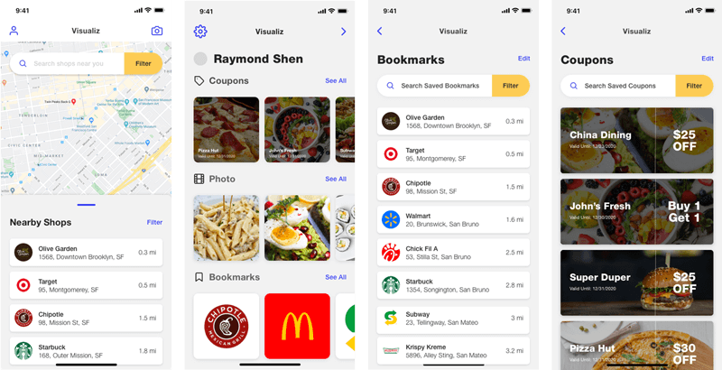
Easing the sign-up user flow
The first proposed design changes to the sign-up flow on forms were overwhelming users with
field inputs. On the new final mockups I’ve designed for Visualiz, I reworked the different
fields to produce a more direct process and flow by reducing the number of form fields within a
single screen, making each relevant field onto its own screen to ease the attention span of
users.
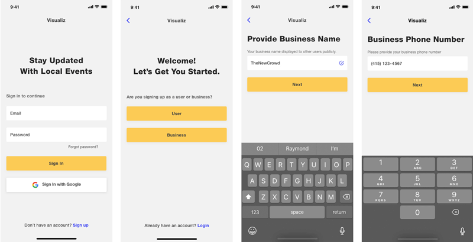
Designing the AR user interface
The AR functionality lets users scan their local areas to collect available coupons and tickets
from nearby shops and businesses. When I designed the AR screen for Visualiz, it was quite a
challenge as I had to keep in mind on how the app would determine location, places, and the
interactivity between user, app, and environment.
The solution in designing the AR screens came from multiple sources of inspiration, such as
google maps, scavenger, NBA basketball AR, and studies on how to design for AR screens. When
designing the AR functionality, I kept three main problems at hand that needed to be solved:
A design that integrates both the digital and physical world seamlessly.
How particular surface, lighting, shadows, objects affect or interact with the app &
users would affect or interact with the app.
Determining whether the design would be a fixed screen in space, real-world related,
or
object-related.
Based on the provided specs of its AR functionality. Users can interact and see coupons,
discounts, events, and other uploaded user videos through their phones. With those specs in
mind, I applied a fixed screen container at the bottom of the AR interface where users could
collect, discover, and find the current deals and coupons of nearby businesses around them. To
ensure that the AR design integrates seamlessly, I made sure that the AR interface could work
around multiple environments, weather, and sceneries. With google map's recent implementation of
their AR functionality, I decided to use that similar idea and applied it to visualiz's
platform. The app would intake user location, environment, and data from the inputted source of
local businesses that participated in our platform. Businesses that participated in our platform
can upload coupons, on-going events, photos, that'll inform nearby users of available digital
tickets that could be collected used within those specific shops.
What I’ve learned throughout my internship at Visualiz.
My experiences and learnings @ Visualiz
I onboarded Visualiz team as a design intern with a 2-month contract to help redesign, research,
and develop their product & brand identity. During my time working at Visualiz, I learned a lot
about the importance of understanding its business goals, different department roles, and the
process of designing and executing a project to production.
Working at Visualiz as their first-time designer was quite a challenge because the product was
at its very first stage of production. As a designer, I was responsible for conducting user
research, testing, development of its brand identity, and product redesign to improve its user
flow and user experiences. One of the main constraints and challenges I faced was the limited
amount of time I had to collect user data. Another problem I faced was communication, which was
often slow because of different time zones and locations the team lived in. Lastly, the most
difficult challenge was designing the augmented reality user interfaces due to my lack of
inexperienced skills and knowledge of its functionalities.
The challenges I faced during my internship were essential lessons I've learned, gained, and
improved throughout the two-month as a designer. With a limited amount of time to conduct user
research, I was forced to learn new ways of gathering user data. I resulted in utilizing digital
research articles, blogs, and forums of the subject and answers I was seeking for and needed at
hand. I also learned the importance of communication when working in a team to quickly and
efficiently execute projects before the deadline. Lastly, I expanded my knowledge and skills as
a designer from learning, studying, and researching AR possibilities, problems, limitations, and
features that could or couldn't be implemented on mobile applications. At the end of my
internship, I learned a lot about working in remote teams and how to manage projects efficiently
as an individual designer.